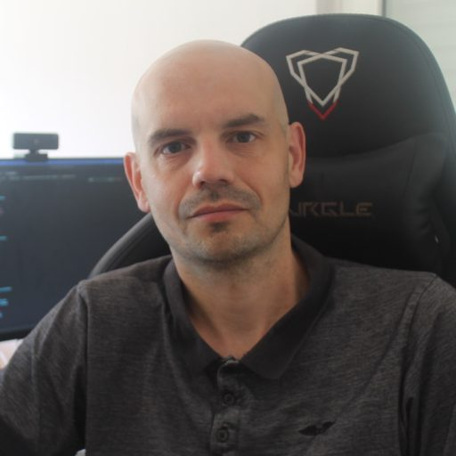
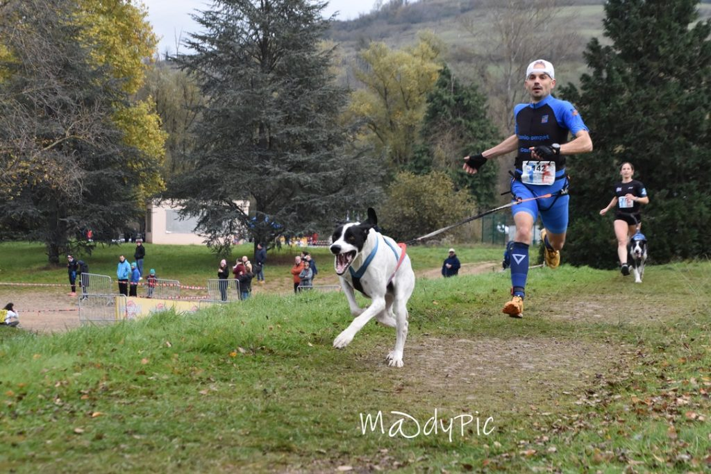
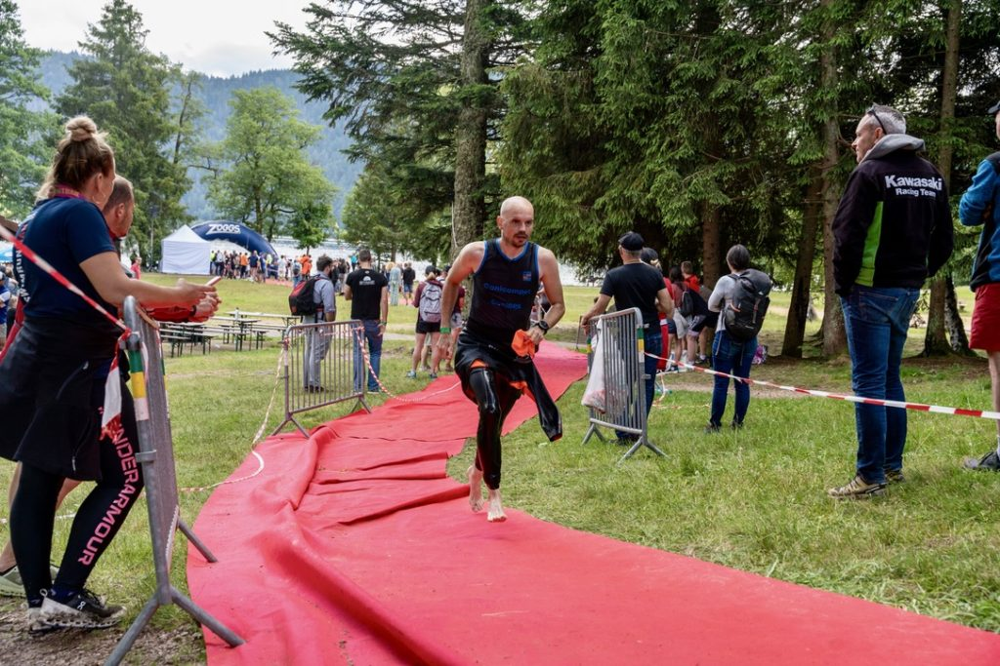
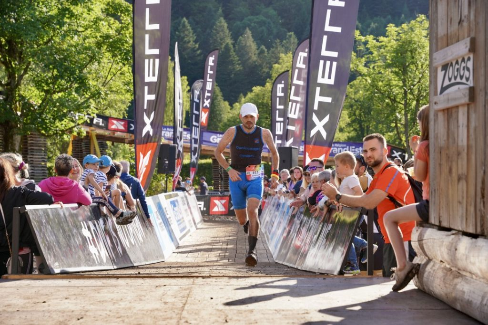

Jonathan Atton
Développeur Fullstack
Secteur Alsace - Moselle - France
Président Cani'Compet Alsace | Sportif canicross & triathlon
À propos
En tant que développeur logiciel sénior, je suis prêt à apporter une valeur ajoutée immédiate à votre entreprise. Mon expérience multisectorielle (banque, juridique, RGPD, laboratoire d’analyses, sport) me permet de comprendre et de m’adapter rapidement à des contextes variés. Mon expertise technique assure la création de solutions logiciels capables de répondre aux défis les plus complexes.
Au-delà du code, je mets à profit mes compétences complémentaires en matière de stratégie décisionnelle, de marketing et d’encadrement de projets & équipes pour assurer une gestion intégrée du cycle de vie produit.


Compétences
Back-end
- Python / Django: Maîtrise avancée, APIs RESTful.
- .NET / C#: Écosystème Microsoft, WPF, Analyse d'images, IA.
- WebSocket: Communication temps réel.
Front-end
- Angular / Ionic: Applications web et mobiles modernes.
- Microsoft Dynamics: Et PowerApps.
- React: Avec intégration dans Microsoft Dynamics.
- Python / PyQt: Interfaces de bureau.
Data & Cloud
- SQL: Bases de données relationnelles, optimisation.
- Cloud (OVH): Déploiement, gestion d'infrastructure.
- OS: Linux, MacOS, Windows.
R&D / IA
- OpenCV / Emgu: Vision par ordinateur.
- IA: Analyse automatique.
- Intégration de l'IA: Dans les applications.
Expériences
Développeur sénior – TVH Consulting
Intégrateur et développeur spécialisé sur la solution Microsoft Dynamics. Conception et déploiement d'applications métiers avancées exploitant la puissance de Canvas Apps et la flexibilité de React pour répondre aux besoins critiques de gestion d'entreprise.
Microsoft Dynamics, Canvas Apps, React
Création de la plateforme RacesConnect
Création et promotion des plateformes mobiles RacesConnect et Canicompet. Gestion des inscriptions et chronométrage.
Python/Django, Angular/Ionic, Python/QT
Création de la plateforme CaniGPS
Solution de suivi GPS pour chiens CaniGPS. Localisation, clôtures virtuelles, suivi d'activité sportif.
Python/Django, Angular/Ionic, Hardware (GPS)
Développeur sénior Eurofins
R&D sur l'analyse automatique par microscope électronique. Automatisation, IA, ergonomie.
.Net, C#, Visual Studio, OpenCV
Responsable Informatique ActeCil
Mise en place infrastructure, outils SAS (APM, CilApps), management équipe.
Python, Django, Infrastructure
Développeur Euro Information
Outils WEB, statistiques, CMS multi-sites pour Crédit Mutuel CIC.
.Net, C#, ASP.NET
Portfolio

Son espace santé / refuge / éleveur
Solution complète de gestion du bien-être et du suivi administratif pour les propriétaires d'animaux, les refuges et les éleveurs.
Voir le site
RacesConnect – Canicompet
Plateformes de gestion d'inscriptions et chronométrage de compétitions.
Voir le site
RacesConnect Timing
Logiciel pour gérer les listes de départ et le chronométrage des compétitions. Chronométrage manuel ou automatique avec des puces.
Voir le site
CaniClub Connect
Application mobile pour clubs canins : gestion membres, comm, boutique.

Sports
Athlète accompli et passionné, je pratique régulièrement le canicross, le caniVTT, le triathlon et le Xterra. J’ai participé à plusieurs championnats de France, d’Europe et du Monde.
Cette discipline m'apporte résilience et capacité à atteindre des objectifs ambitieux. Je suis également président du club Cani’Compet Alsace et organisateur du canicross de Benfeld.


